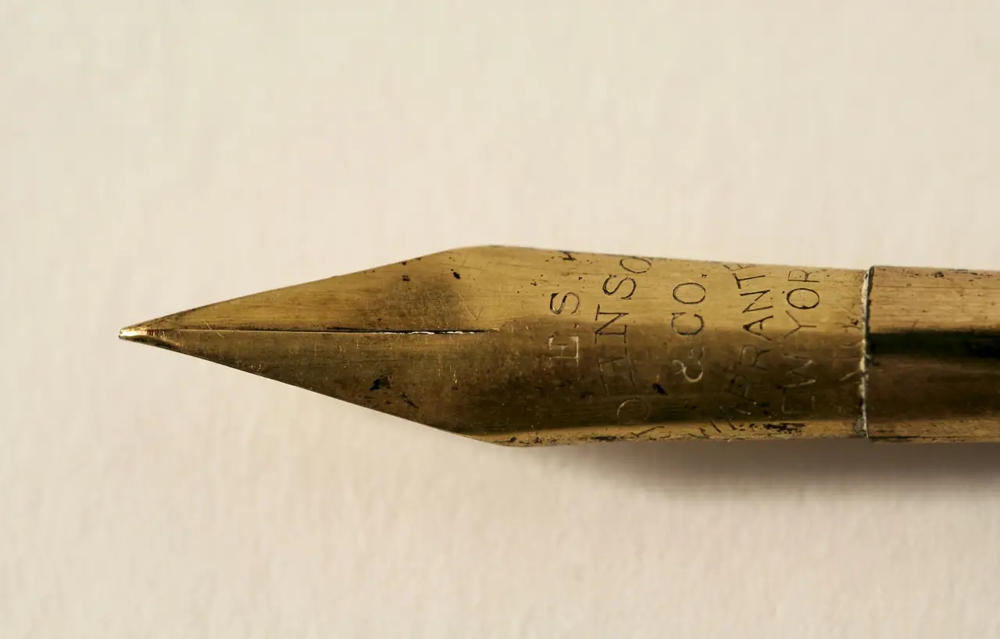
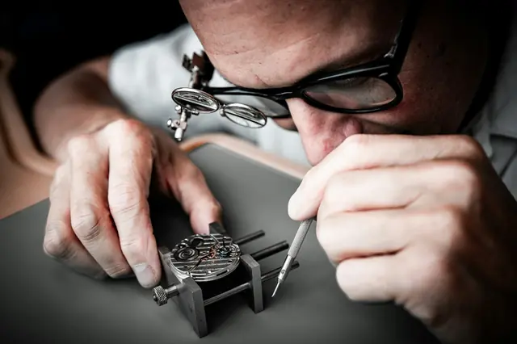
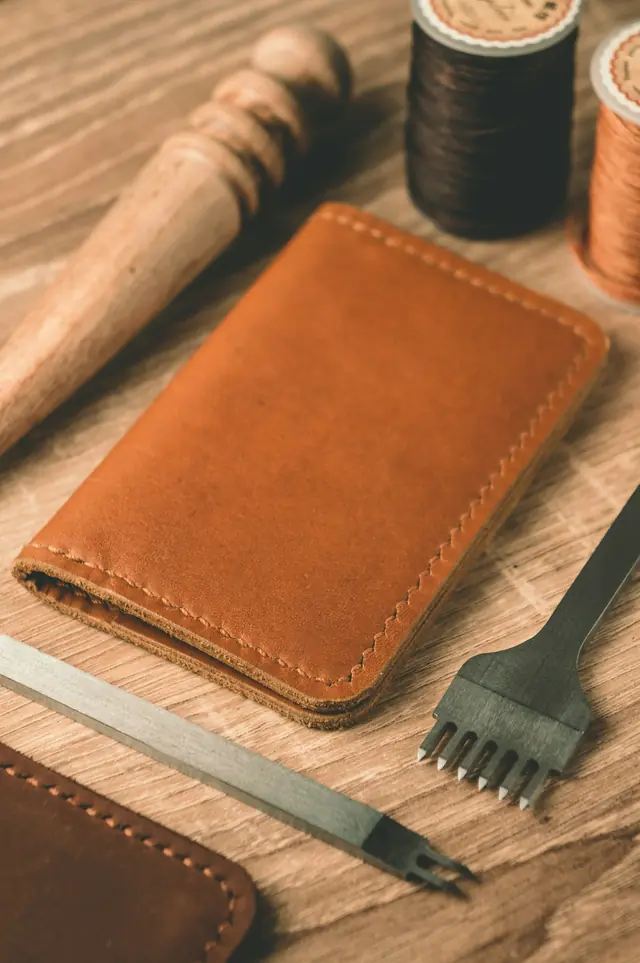
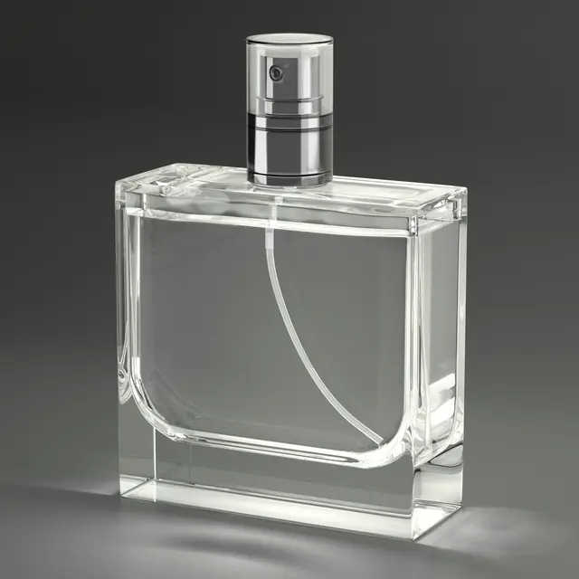
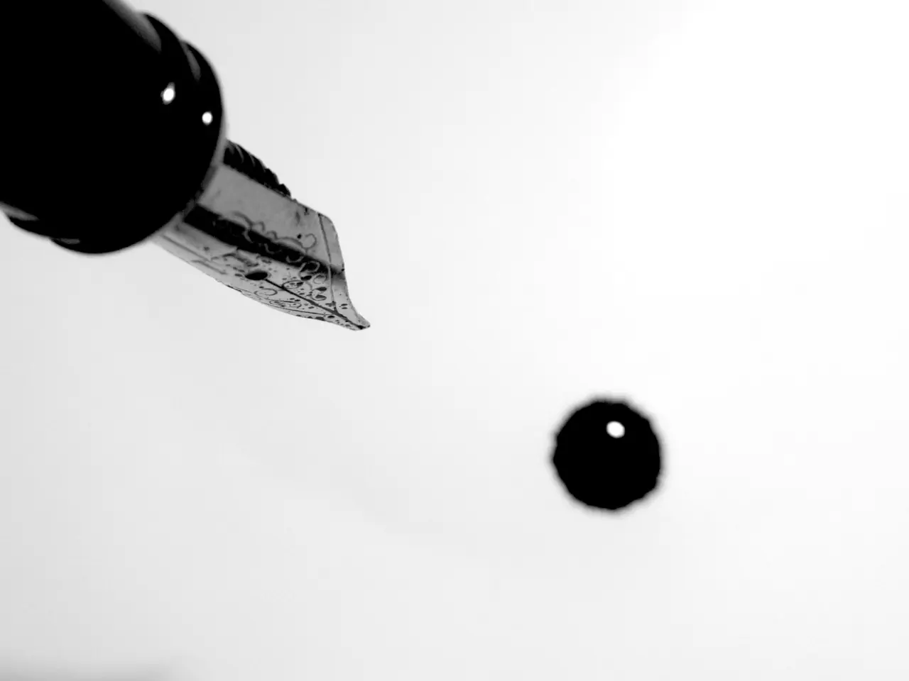

작가 에디션
1992년 헤밍웨이에서 2026년 브램 스토커까지, 해마다 한 명의 작가를 기리는 한정판으로 문학의 이름을 펜에 남겨 왔습니다.
Since 1906 · Hamburg
1906년 함부르크에서 시작된 만년필 메종, 몽블랑. 알프스 최고봉의 이름과 하얀 별, 그리고 펜촉에 새긴 숫자 4810의 이야기를 따라가 봅니다.
01 · 이름과 별
1906창립
4810m · 몽블랑의 높이
몽블랑이라는 이름은 알프스에서 가장 높은 산, 몽블랑에서 왔습니다. 모서리가 둥근 하얀 육각 별은 눈 덮인 정상을 뜻하고, 마이스터스튁 펜촉에 새겨진 숫자 4810은 당시 측량된 산의 높이(미터)입니다. 정상에 오르듯, 최고의 글쓰기 도구를 만들겠다는 다짐이 이름 안에 담겨 있습니다.
1906년, 클라우스-요하네스 포스·알프레드 네헤미아스·아우구스트 에베르슈타인이 고급 만년필을 만드는 회사(Simplo Filler Pen Co.)로 출발했고, 곧 함부르크에 자리 잡았습니다.
‘Montblanc’ 펜과 상표는 1909~1910년 무렵 등장했고, 회사는 1934년부터 몽블랑이라는 이름을 쓰고 있습니다.
여섯 개의 끝은 산의 봉우리 또는 빙하 계곡으로 설명됩니다. 별이 처음 쓰인 해는 자료에 따라 1910년 또는 1913년으로 엇갈립니다.
02 · 연대기
03 · 시그니처 컬렉션
01 — 05
마이스터스튁 만년필 가운데 가장 큰 모델. 검은 ‘프레셔스 레진’ 몸통, 금 또는 플래티넘 도금 링, 피스톤 필러 방식, 그리고 하얀 별이 특징입니다.
149와 함께 마이스터스튁의 크기 라인업을 이루는 모델들입니다. 1983년에는 귀금속 소재로 만든 솔리테르(Solitaire) 버전도 더해졌습니다.
해마다 한 명의 위대한 작가에게 바치는 한정판. 1992년 헤밍웨이로 시작해 제인 오스틴(2024), 괴테(2025), 브램 스토커(2026)로 이어졌습니다. 스토커 에디션의 1,897개 한정은 『드라큘라』 출간 연도에서 왔습니다.
현대적인 디자인의 라인. 뚜껑 끝 투명한 돔 아래에 하얀 별이 떠 있는 듯 보이도록 만든 것이 특징입니다.
위대한 예술 후원자를 기리는 펜. 첫 에디션 로렌초 데 메디치(1992)는 4,810개 한정이었고, 2022년 30번째 에디션 ‘빅토리아 & 앨버트’로 시리즈를 마무리했습니다. 에디션마다 ‘4810’과 더 화려한 ‘888’ 버전이 있었습니다.
04 · 장인정신
필기구는 함부르크 본사 옆 매뉴팩처에서 만들어집니다. 금 펜촉 하나에 약 35단계의 수작업이 들어가며(약 40단계라는 자료도 있습니다), 모든 펜촉은 손으로 연마하고 귀로 확인합니다.

금 띠에서 0.02mm 공차로 납작한 판(플라티네)을 찍어 내고, 8톤 유압 프레스로 문양을 새깁니다.
펜촉의 가장자리를 손 줄로 하나하나 다듬습니다.
1,000°C가 넘는 열로 끝에 이리듐 팁을 붙입니다.
펜촉을 한 개씩 손으로 넣어 잉크가 흐를 가느다란 틈을 자릅니다.
‘손으로만 할 수 있다’는 8자 모양의 연마. 시계 제작의 모서리 마감(앙글라주)에 비유되곤 합니다.
모든 펜은 직접 써 보는 테스트를 거치며, 종이 위 펜촉의 소리까지 확인합니다. 생산량의 약 2%는 다시 수정 공정으로 돌아갑니다.
펜촉 굵기는 EF부터 OBB까지 기본 8가지입니다.
05 · 제품 세계
몽블랑은 1993년부터 스위스 리치몬트 그룹에 속해 있습니다. 필기구에서 출발해 시계, 가죽, 향수까지 영역을 넓혀 왔습니다.
만년필, 롤러볼, 볼펜, 파인라이너, 펜슬, 잉크와 노트. 마이스터스튁·스타워커·작가 에디션 등이 대표 라인입니다.

1997년 스위스 르로클에서 시작했고, 1858년 설립된 빌레레의 미네르바 매뉴팩처(2006년 인수)에서는 지금도 무브먼트 부품을 손으로 마감합니다. 1858, Star Legacy, Heritage 등의 라인이 있습니다.

1926년의 첫 가죽 펜 파우치에서 출발했습니다. 1992년 오펜바흐의 가죽 공방을 인수했고, 가방과 소형 가죽 제품을 만듭니다.

2010년부터 인터파르팡(Interparfums)이 라이선스로 만들며, 계약은 2030년 말까지입니다. Legend, Explorer, Signature 등의 라인이 있습니다.
06 · 문화와 후원
1992년 헤밍웨이에서 2026년 브램 스토커까지, 해마다 한 명의 작가를 기리는 한정판으로 문학의 이름을 펜에 남겨 왔습니다.
1992년부터 예술가가 아닌 ‘오늘날의 예술 후원자’를 여러 나라에서 선정해 왔습니다. 한국에서는 파라다이스 재단(Paradise Foundation)의 최윤정이 이 상을 받았습니다.

2022
2022년 5월 16일 문을 연 브랜드 박물관. 니에토 소베하노 건축사무소가 설계했고, 약 3,600m²의 관람 공간에 필기구 412점과 아카이브, 글쓰기 아틀리에, 카페가 있습니다.
조르조 사르네, 몽블랑 CEO (2026년 인터뷰)
AI의 시대에 몽블랑이 다시 꺼내 든 말은 “펜은 속도를 늦추도록 도와준다”는 것입니다. 오늘은 한 줄이라도, 천천히 손으로 써 보는 건 어떨까요.
처음으로 돌아가기